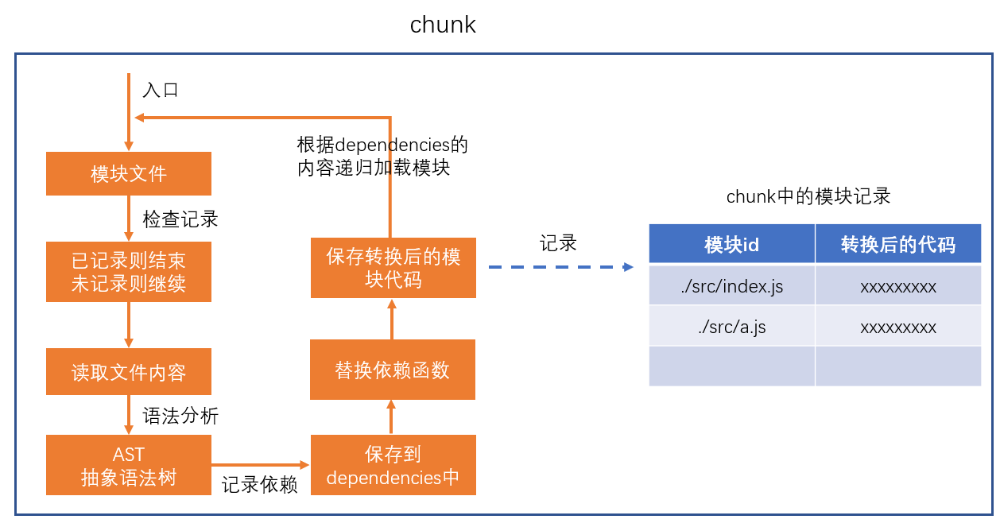
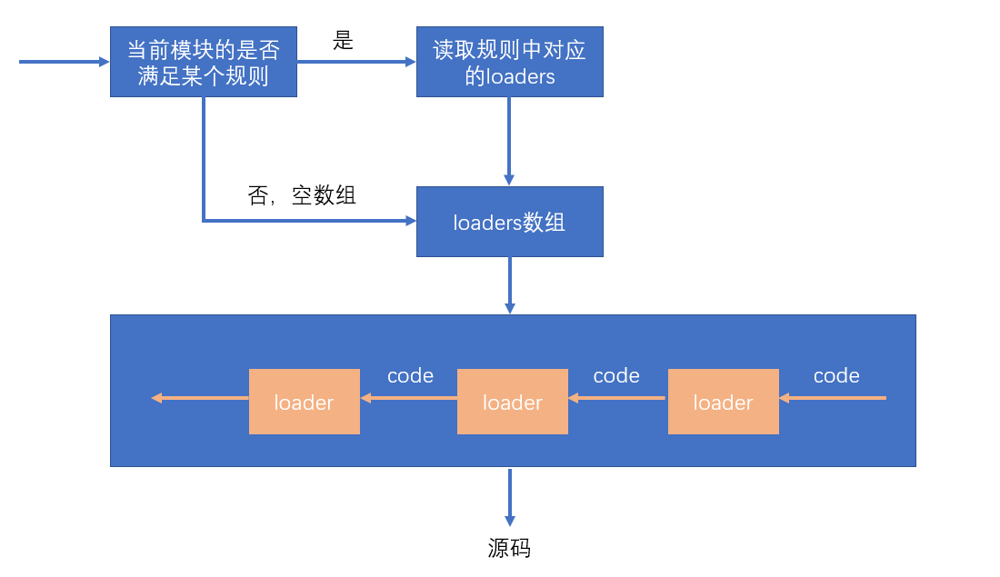
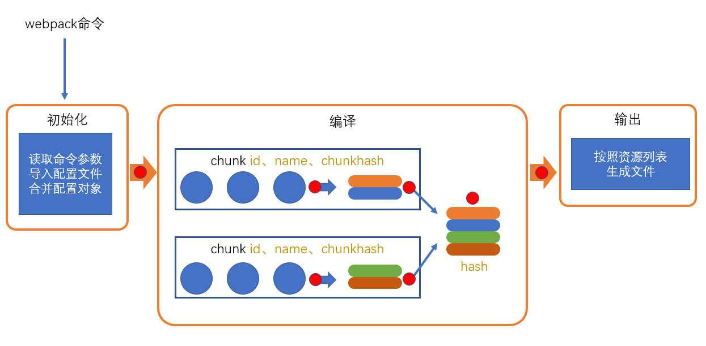

loader
webpack做的事情，仅仅是分析出各种模块的依赖关系，然后形成资源列表，最终打包生成到指定的文件中。
更多的功能需要借助webpack loaders和webpack plugins完成。
webpack loader： loader本质上是一个函数，它的作用是将某个源码字符串转换成另一个源码字符串返回。

loader函数的将在模块解析的过程中被调用，以得到最终的源码。
全流程：

chunk中解析模块的流程：

chunk中解析模块的更详细流程：

处理loaders流程：

loader配置：
完整配置
1 | module.exports = { |
简化配置
1 | module.exports = { |
plugin
loader的功能定位是转换代码，而一些其他的操作难以使用loader完成，比如：
- 当webpack生成文件时，顺便多生成一个说明描述文件
- 当webpack编译启动时，控制台输出一句话表示webpack启动了
- 当xxxx时，xxxx
这种类似的功能需要把功能嵌入到webpack的编译流程中，而这种事情的实现是依托于plugin的

plugin的本质是一个带有apply方法的对象
1 | var plugin = { |
通常，习惯上，我们会将该对象写成构造函数的模式
1 | class MyPlugin{ |
要将插件应用到webpack，需要把插件对象配置到webpack的plugins数组中，如下：
1 | module.exports = { |
apply函数会在初始化阶段，创建好Compiler对象后运行。
compiler对象是在初始化阶段构建的，整个webpack打包期间只有一个compiler对象，后续完成打包工作的是compiler对象内部创建的compilation
apply方法会在创建好compiler对象后调用，并向方法传入一个compiler对象

compiler对象提供了大量的钩子函数（hooks，可以理解为事件），plugin的开发者可以注册这些钩子函数，参与webpack编译和生成。
你可以在apply方法中使用下面的代码注册钩子函数:
1 | class MyPlugin{ |
事件名称
即要监听的事件名，即钩子名，所有的钩子：https://www.webpackjs.com/api/compiler-hooks
事件类型
这一部分使用的是 Tapable API，这个小型的库是一个专门用于钩子函数监听的库。
它提供了一些事件类型：
- tap：注册一个同步的钩子函数，函数运行完毕则表示事件处理结束
- tapAsync：注册一个基于回调的异步的钩子函数，函数通过调用一个回调表示事件处理结束
- tapPromise：注册一个基于Promise的异步的钩子函数，函数通过返回的Promise进入已决状态表示事件处理结束
处理函数
处理函数有一个事件参数compilation